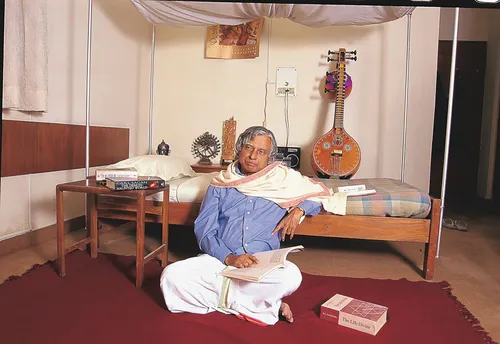

Accomplishments & Biography
Early Life: Dr. Kalam was born on October 15, 1931, in Rameswaram, Tamil Nadu.

Career Highlights: He played a pivotal role in India's missile development program and served as the 11th President of India.
Awards: Dr. Kalam received several prestigious awards, including the Bharat Ratna, India's highest civilian award.